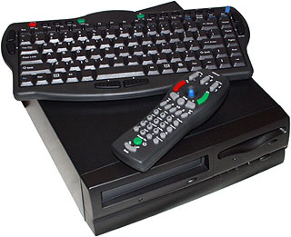
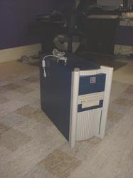
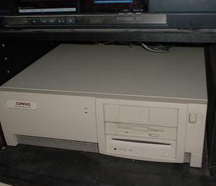

|
Be in your Stereo
A BeOS-centric system for controlling a database of audio files via HTTP, by Stephen van Egmond.
|
Table of contents

- Introduction & history
- Installation
- Usage
» The built-in web server
» The PHP API for Skin Authors
- Troubleshooting
This software is freely redistributable in binary form. This licence applies.
This software contains code by me (Stephen van Egmond), Marco Nelissen (via HTTP-UI), Jeff Hamilton, and Peter Folk.
I'm grateful for their contributions.
Introduction
This software was inspired by the need to scratch a particular itch -- in this case,
the fact that my digital music collection was growing far quicker than my ability to store and organize it.
With hundreds of CDs and an equivalent amount of MP3's, my environment was starting to get pretty disorganized.
Did I keep those files on my firewall, Linux machine, Windows partition, BeOS machine at work, or my wife's system?
Argh.
I noticed that my original BeBox -- which had long been collecting dust after a move --
could be used in building a solution. It has one fan (in the power supply), which makes it
far quieter than my AMD-powered jet engine. I could imagine leaving it on,
and not have the noise drive me nuts.
I undertook a survey of what was out there that would let me control the BeBox remotely.
- I could telnet in. Ugh.
- Be In Control would let me control playback
(if I had an infrared receiver module). Very nice, but I still need a means of adding songs to the playlist.
- emp3box looked very, very promising: it required a web server,
perl, SoundPlay, and not much else. Four hours of
fighting with the PowerPC compilers to build a single Perl module (still unsuccessful)
made me reconsider.
- SoundPlay comes with a handy HTTP user interface for controlling which song is played,
and included a few features for streaming playback. It also adheres to the BeOS philosophy: It Just Works. The source code was
included in the SoundPlay plugin SDK. Cool.

How Be in your Stereo fits in
|
Marco was kind enough to provide me with a more up-to-date version of the source to HTTP-UI, and I
set to work deriving a BeOS-centric tool that could be used to easily navigate a large mp3 collection.
The problem of navigating a large amount of information is a tricky one. I don't think that what I've got here is perfect, but it's a start.
Some of the ideas I've implemented:
- Don't show too-large a list of information. For instance, if a list of audio files is just too long (~ 60 items) it doesn't even bother to show it to you.
- Don't bother with pull-down menus. The idea is to get quick access to your mp3 collection; the gestures with the mouse to navigate a pull-down menu-laden web interface just aren't worth it.
- Give lots of ways to view the information. I've done this by allowing exploration by Year, Genre, Artist, and Album.
There is nothing more depressing that having watching your software being used by others. It's also very
insightful, and provides lots of information that can make the software better if you have the humility to learn the lessons.
Therefore, I look to you to let me know how you're using this software, and what parts
drive you nuts.
Hardare Notes

You'll need a system which is capable of running the BeOS, along with a supported
audio card and network card. Video is only important if you intend to have a monitor
hooked up to it -- remember that the primary user interface is a web browser, which
can be driven from anywhere.
CPU-wise, a Pentium 200 should provide sufficient oomph to play without skipping.
BeBoxes are powerful enough, although under load they will frequently glitch audio.
Tragic.
There are a number of small-sized computer systems available, including the Book PC
(pictured). These systems are nice, but a crucial
component - the network card - is not (yet) supported by the BeOS, and there is zero expandability.
You may want to look into what is termed "NLX" motherboards. NLX refers to a form
factor like AT and ATX. NLX boards are usually comprehensive, providing networking
and onboard audio. Unlike the BookPC they have a PCI slot or two so you can throw
in a device that is supported if one of the motherboard devices aren't.
next: installation